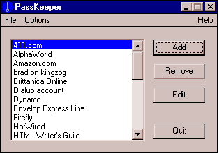

|
PassKeeper by Brad Greenlee | |
|
PassKeeper is a Windows utility that allows you to keep a list of accounts with usernames, passwords, and notes. This list is stored encrypted.  I developed PassKeeper in order to keep track of the many different "accounts" I have across the Net. Many services on the Web, for example, require you to register and give out a username and password, which you are often allowed to pick out yourself, but not always. Examples of such services include HotWired, Pathfinder, and Amazon.com. Of course, PassKeeper can be used to safely keep a record of anything, really. PassKeeper is free for individual and non-profit use. Corporations and generous individuals are encouraged to make a $10/copy donation. You can do this now via PayPal. | |
| Version History | |
| 1.2 |
96.04.25 Fixed a nasty bug that caused certain main passwords of less than 6 characters from working. It's not the same as the bug in 1.01, but related. You can now only enter account names that begin with an alphanumeric character. This is to avoid a strange bug that appears if you enter an account name that starts with certain non-alphanumeric characters. It now checks for duplicate account names when you add or edit an account. You cannot have two identical account names. Changed some other very minor things. |
| 1.11 |
96.04.23 You can now use the return key in the notes field. Thanks again to Greg Rodgers for the suggestion. |
| 1.1 |
96.01.27 Fixed bug that caused a crash if you tried to remove an item with Comfirm Remove on. Credit goes to Greg Rodgers for being the first to report this bug. |
| 1.01 |
95.12.04
|